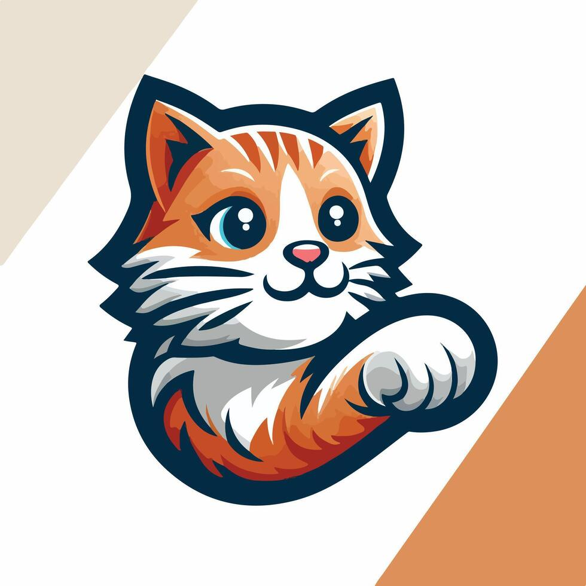
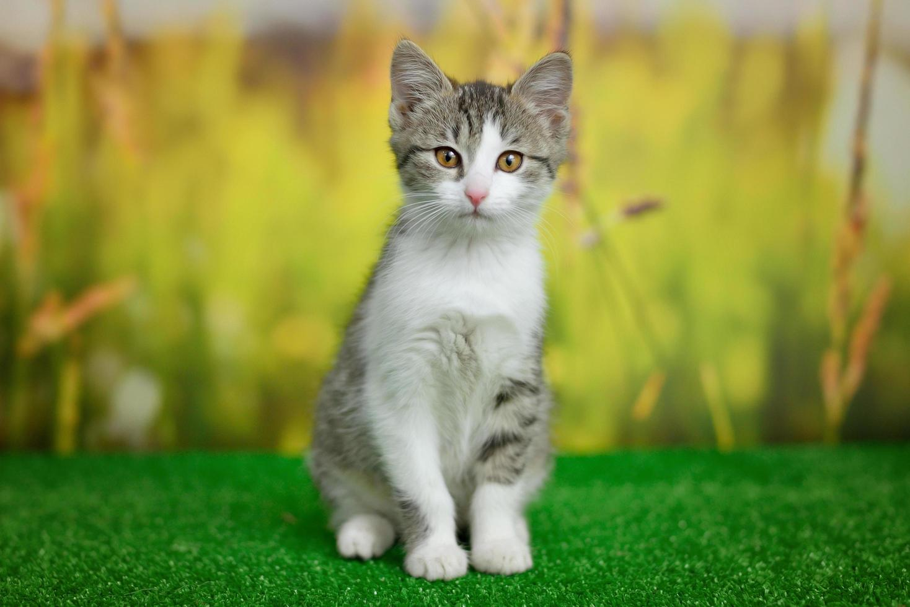
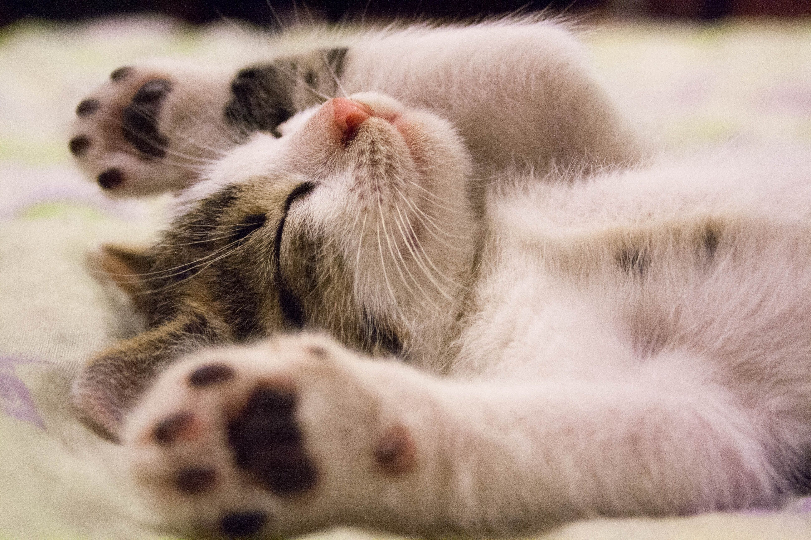

Actualmente está de moda hacerse fotos para Instagram o Facebook de estilo melancólico, pero también divertido, con un toque triste, o con mucha alegría, el caso es que día sí día también las personas subimos auto-retratos del mismo estilo y bastante parecidos entre ellos a nuestras redes sociales.
Considerado como sagrado por algunas culturas, el gato es protagonista de múltiples leyendas y mitos. Las más conocidas son las que aluden a sus siete vidas, y a su particular forma de caer desde grandes alturas.

Bigotes, cola y uñas son las principales partes del cuerpo responsables de que el gato posea el equilibrio y la seguridad de movimientos que posee. Veamos las características de cada una de esas partes y aprendamos como las usas cuando las necesita.